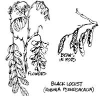
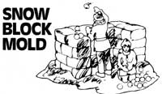
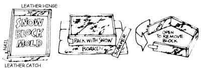
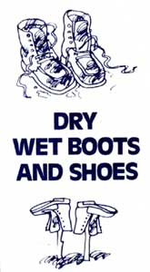

Here are a few more of THE Mother Earth News syndicated features which have appeared in 100+ newspapers over the past four and half years.
Winter is here again and, contrary to what most folks believe, this season can be productive for the wild food forager.
Tasty beans, concealed in what looks like flat leather pods, still cling to the black locust trees. Pick what you can reach and then take a long pole and whack the pods that are higher up. They'll come spinning down to be gathered from the snow. Pick a lot of these pods.
Locust beans can be used like any other bean and are good just boiled in water (add a little fried bacon for flavoring) or added to fish and bean soup!
Snow was made for children, and you can help your neighborhood half-pints automate the construction of that next winter fort with this simple homemade block mold.
Build the form from the lumber in a stout, discarded wooden case, and take care to fit the mold with both a leather hinge and leather clasp on opposing corners as shown. (Sections cut from an old pair of shoes will work just fine.)
Place the finished form on the sidewalk, a piece of plywood, or a similar flat surface ... and solidly pack the mold with snow. Scrape the top of the block square with any suitable straightedge, release the catch, and remove the finished "brick".
A well-designed structure built from these snow blocks can last as long as winter holds out.
After a healthy fall or winter romp through the countryside those friendly old leather boots and shoes often take on more moisture than they should. The method you choose to dry them out could mean the difference between a few extra minutes of your time or an unnecessary trip to the shoe store for new ones ... so dry them carefully.
First remove, wash, and dry the laces separately. Then wipe all mud and grime from the boots with warm water and a small scrub brush. Hand dry the boots with a rag. Crumple sheets of newspaper into balls, warm them near the stove, and stuff them loosely inside the footwear. This will both speed the drying process and help the boots retain their shape. Place the footwear near-but not too near-a heat source where the air can circulate freely around them. Keep the boots away from excessive heat as wet leather burns, shrinks, cracks, and grows out of shape more quickly than dry.
When the footwear Is dry and still warm, apply several coats of Sno-seal or a comparable waterproofing compound (not a silicone-based formula, though, because it'll make your feet sweat).
Out in the boonies It's a little more difficult but still possible to successfully restore wet shoes to top condition. After cleaning and partially drying them near the campfire or in the sun (inverted on stakes to allow the warm air to circulate ... good for wet socks too), heat some pebbles in a pan till the stones are warm to the touch. Place the rocks in the boots and shake the pebbles around occasionally to hasten drying. In an emergency, the leather can be waterproofed with bacon grease ... it does the job.
|
|
 |
 |
|
 |
 |
|